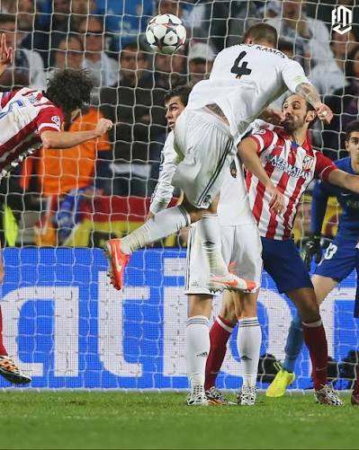

A 2014-es UEFA Bajnokok Ligája-döntőt 2014. május 24-én rendezték Lisszabonban, a Benfica stadionjában. A fináléban két madridi csapat, a Real Madrid és az Atlético Madrid találkozott egymással.

A mérkőzés 93. percében, amikor a Real Madrid már szinte elveszettnek látta a döntőt, Luka Modrić a jobb oldalról végzett el egy szögletet. A labda tökéletes ívben érkezett az Atlético Madrid büntetőterületére, ahol Sergio Ramos kiváló ütemben emelkedett a magasba. A spanyol védő erőteljes és pontos fejessel a kapuba juttatta a labdát, Thibaut Courtois kapusnak esélye sem volt hárítani. A Real Madrid játékosai azonnal Ramoshoz rohantak, miközben a stadionban ünneplés tört ki. A találat különlegessége az időzítésében rejlett: mindössze néhány pillanattal a rendes játékidő vége előtt született, amikor már úgy tűnt, hogy az Atlético Madrid megszerzi a győzelmet. Sergio Ramos gólja nem csupán egy fontos egyenlítés volt, hanem a Real Madrid történelmének egyik legmeghatározóbb pillanata, amely örökre beírta magát a labdarúgás történetébe. A szurkolók számára a 93. perc azóta is a hit, a kitartás és a soha fel nem adás szimbóluma.
Sergio Ramos egyenlítő találata után a mérkőzés hosszabbításba torkollott. A Real Madrid játékosai hatalmas önbizalommal tértek vissza a pályára, míg az Atlético Madrid futballistáin látható volt a kapott gól okozta csalódottság és fáradtság. A hosszabbítás első félidejében a Real egyre nagyobb nyomást helyezett ellenfelére, és végül sikerült átvennie a vezetést. A 110. percben Gareth Bale emelked ki a védők közül, és Ángel Di María lövése után a kipattanó labdát fejjel a kapuba juttatta. Ezzel a Real Madrid 2–1-re átvette a vezetést. A 118. percben Marcelo egy újabb támadás végén megszerezte a harmadik gólt, majd a 120. percben Cristiano Ronaldo büntetőből beállította a 4–1-es végeredményt. A lefújást követően a Real Madrid játékosai hatalmas ünneplésbe kezdtek, Iker Casillas pedig magasba emelhette a klub történetének tizedik BEK/Bajnokok Ligája-trófeáját, amelyet La Décima néven ismer a futballvilág.